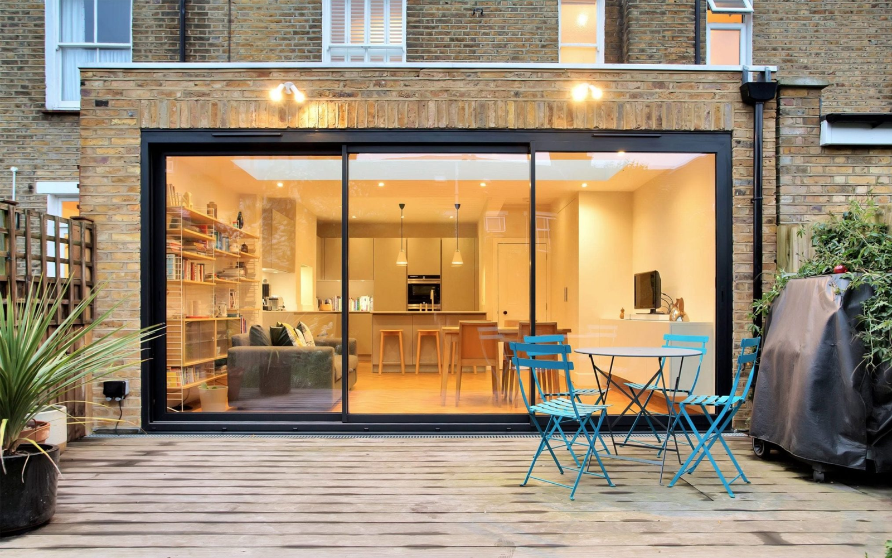

DESIGN SERVICES
Clear, practical engineering for home projects. Click a section to expand.


This list is not exhaustive — if you don’t see your project type, please get in touch!
Clear, practical engineering for home projects. Click a section to expand.
This list is not exhaustive — if you don’t see your project type, please get in touch!